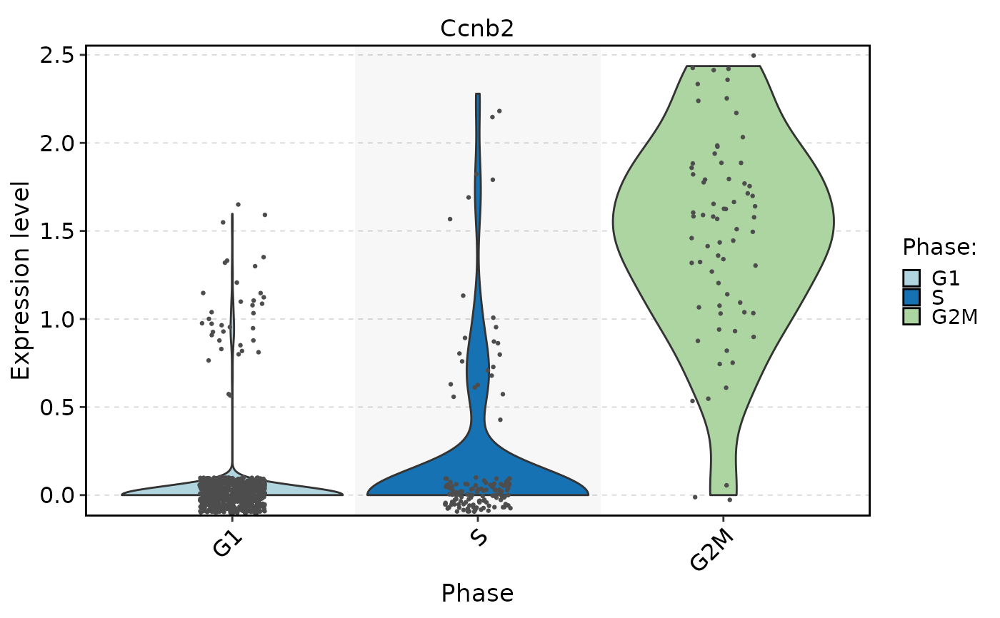

Find Expressed Markers
Usage
FindExpressedMarkers(
object,
ident.1 = NULL,
ident.2 = NULL,
cells.1 = NULL,
cells.2 = NULL,
features = NULL,
assay = NULL,
layer = "data",
min.expression = 0,
test.use = "wilcox",
logfc.threshold = 0.25,
base = 2,
pseudocount.use = 1,
mean.fxn = NULL,
fc.name = NULL,
min.pct = 0.1,
min.diff.pct = -Inf,
max.cells.per.ident = Inf,
latent.vars = NULL,
only.pos = FALSE,
min.cells.group = 3,
min.cells.feature = 3,
norm.method = "LogNormalize",
seed = 11,
verbose = TRUE,
...
)Arguments
- features
Features to plot: a character vector or a named list of assay gene names or numeric metadata columns.
- assay
Assay to use.
NULLuses the default assay.- layer
Assay layer to use.
- min.expression
The min.expression used.
- seed
Random seed.
- verbose
Print progress messages.
- ...
Additional arguments passed to reduction methods.
Examples
data(pancreas_sub)
pancreas_sub <- RunStandardWorkflow(pancreas_sub)
#> ℹ [2026-08-19 12:15:13] Start standard processing workflow...
#> ℹ [2026-08-19 12:15:13] Checking a list of <Seurat>...
#> ! [2026-08-19 12:15:13] Data 1/1 of the `srt_list` is "unknown"
#> Warning: Data 1/1 of the `srt_list` is "unknown"
#> ℹ [2026-08-19 12:15:13] Perform `NormalizeData()` with `normalization.method = 'LogNormalize'` on 1/1 of `srt_list`...
#> ℹ [2026-08-19 12:15:13] Perform `FindVariableFeatures()` on 1/1 of `srt_list`...
#> ℹ [2026-08-19 12:15:13] Use the separate HVF from `srt_list`
#> ℹ [2026-08-19 12:15:13] Number of available HVF: 2000
#> ℹ [2026-08-19 12:15:13] Finished check
#> ℹ [2026-08-19 12:15:13] Perform `ScaleData()`
#> ℹ [2026-08-19 12:15:14] Perform pca linear dimension reduction
#> ℹ [2026-08-19 12:15:14] Use stored estimated dimensions 1:23 for Standardpca
#> ℹ [2026-08-19 12:15:14] Perform `Seurat::FindClusters()` with `cluster_algorithm = 'louvain'` and `cluster_resolution = 0.6`
#> ℹ [2026-08-19 12:15:14] Reorder clusters...
#> ℹ [2026-08-19 12:15:14] Skip `log1p()` because `layer = data` is not "counts"
#> ℹ [2026-08-19 12:15:15] Perform umap nonlinear dimension reduction
#> ✔ [2026-08-19 12:15:21] Standard processing workflow completed
markers <- FindExpressedMarkers(
pancreas_sub,
cells.1 = SeuratObject::WhichCells(
pancreas_sub,
expression = Phase == "G2M"
)
)
head(markers)
#> p_val avg_log2FC pct.1 pct.2 p_val_adj
#> Ccnb2 1.166336e-110 0.7813704 0.957 0.064 1.865904e-106
#> Tpx2 5.535244e-102 0.4911068 0.783 0.037 8.855283e-98
#> Cdkn3 5.362442e-100 0.2741094 0.696 0.024 8.578835e-96
#> Cenpf 8.562688e-97 1.0483156 0.797 0.045 1.369859e-92
#> Mki67 2.062900e-94 0.3656001 0.812 0.048 3.300227e-90
#> Cdca3 8.144608e-94 1.0334010 0.971 0.101 1.302974e-89
FeatureStatPlot(
pancreas_sub,
rownames(markers)[1],
group.by = "Phase",
add_point = TRUE
)
#> Warning: No shared levels found between `names(values)` of the manual scale and the
#> data's colour values.
